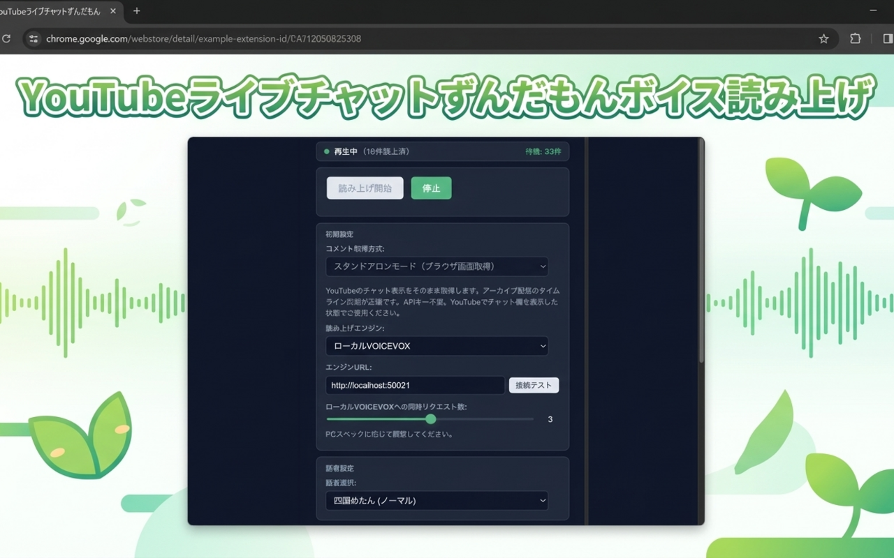
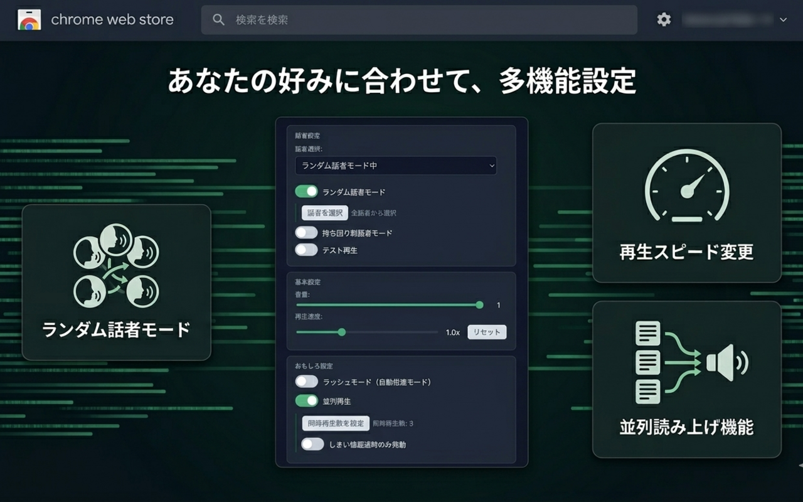
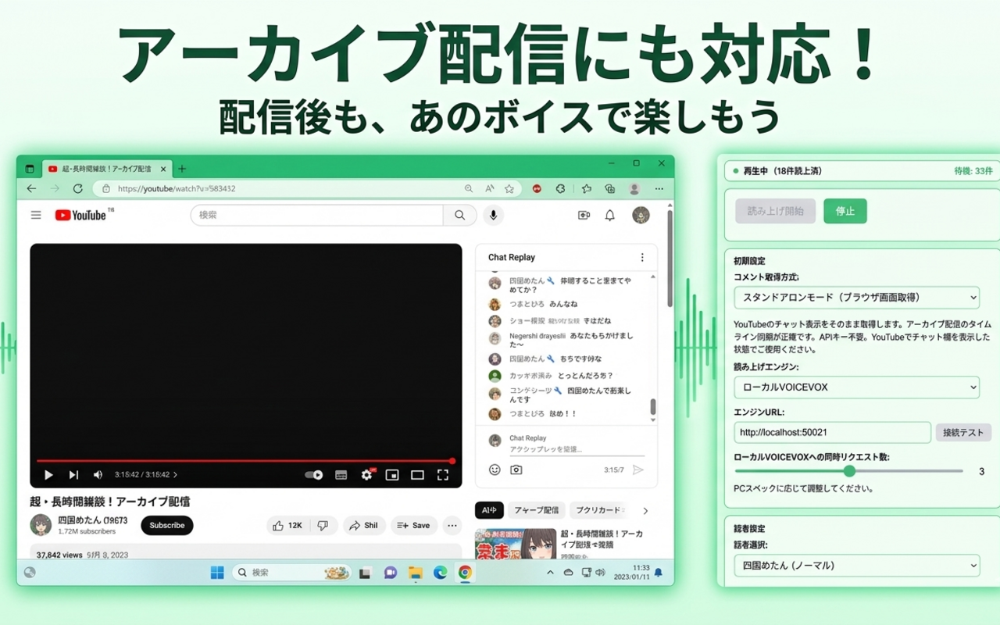
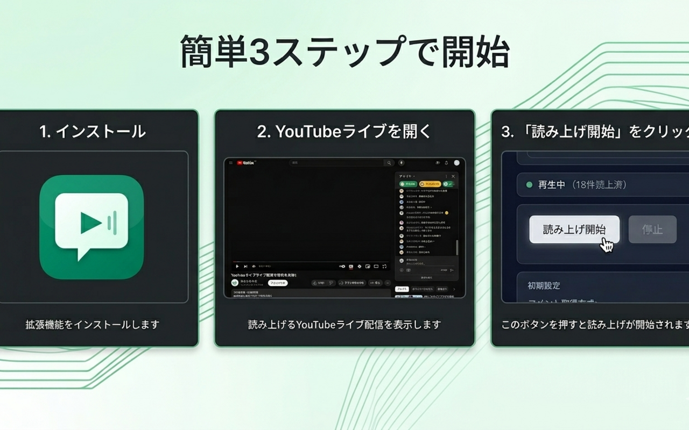

ずんだもんをはじめ多彩な声で、ライブコメントを自動読み上げ。
APIキー不要ですぐに使える無料のChrome拡張機能。

特徴
3つのエンジンと豊富な設定で、あなたのYouTubeライブ視聴をより楽しく。
DOMモードで設定ゼロ。YouTubeライブを開いて「読み上げ開始」を押すだけ。 インストール直後からすぐ使えます。
ローカルVOICEVOX・WEB版API・ブラウザ内蔵音声から用途に合わせて選択。 本格的な音声合成から手軽な利用まで対応。
話者・速度・音量・フィルター・並列再生まで細かく設定可能。 ランクアップする実績システムも搭載。
機能詳細

スクリーンショット

アーカイブ配信にも対応
豊富な設定画面
使い方

本拡張機能は個人が趣味で制作した非公式ツールです。
VOICEVOX・ずんだもんキャラクターとは公式に提携しておりません。
ご利用にあたっては各サービスの利用規約をご確認ください。